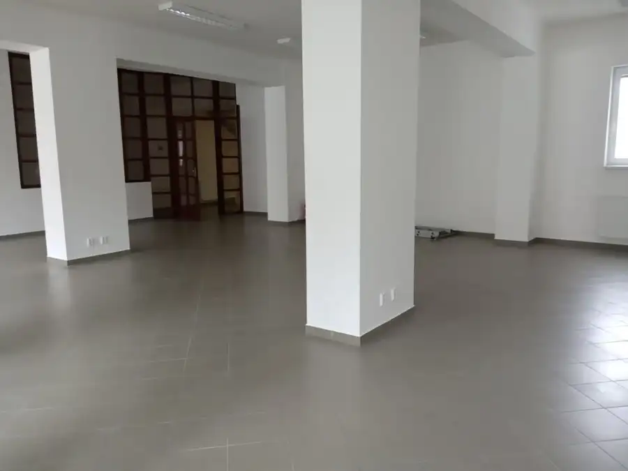
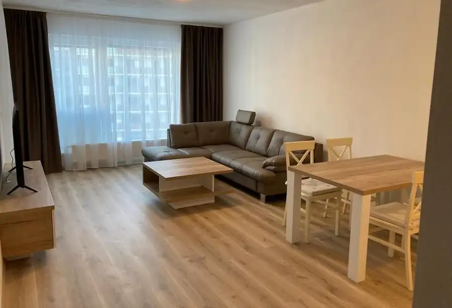
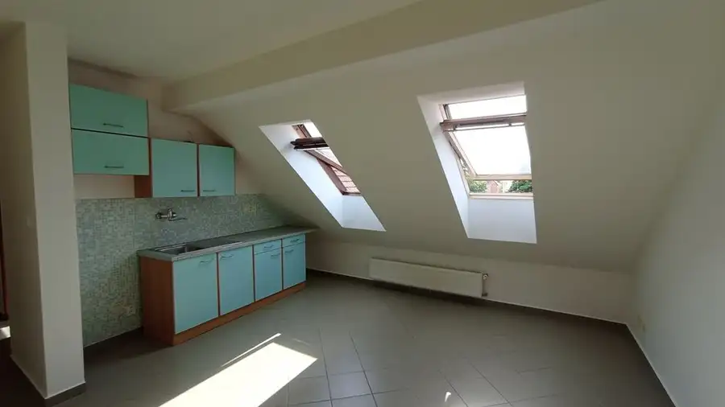
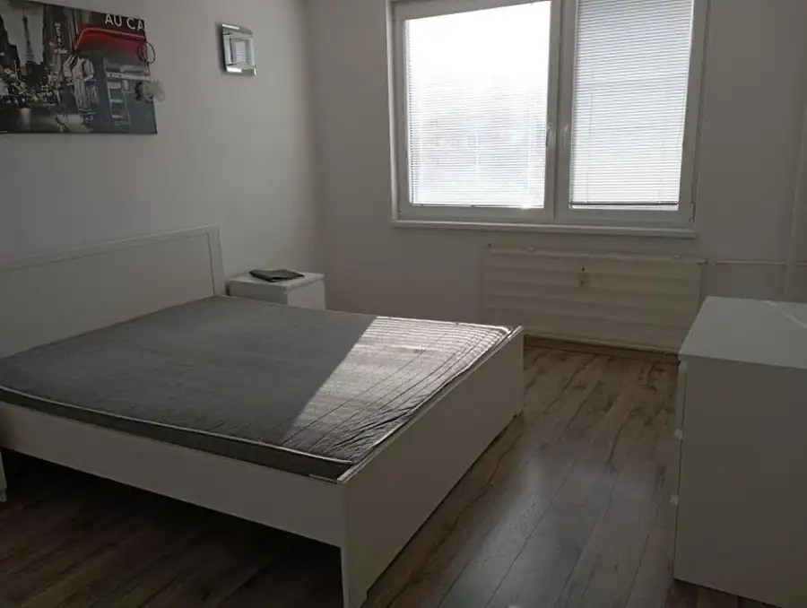
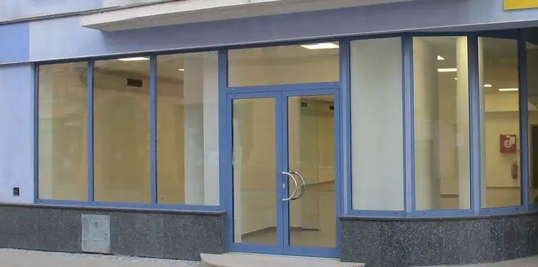
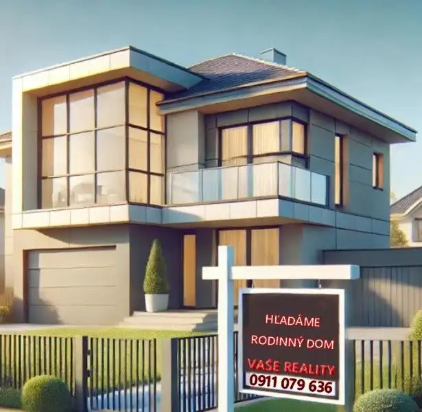
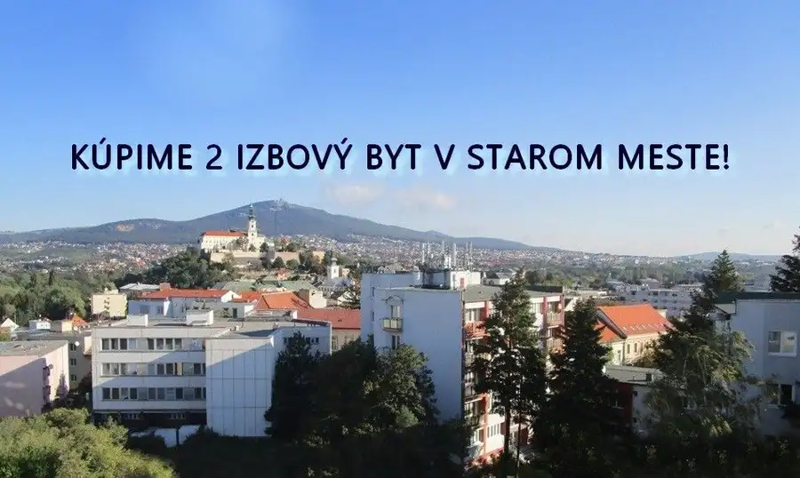
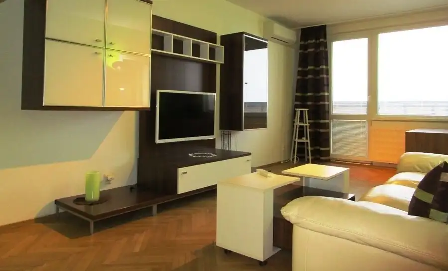

Aktuálna ponuka
Nehnuteľnosti, ktoré ponúkam
8 nehnuteľností na predaj a prenájom. Vyberte typ, alebo napíšte lokalitu.
8 z 8 ponúk

Nebytové priestory4 Cena dohodouKancelárske/ obchodné priestory 112 m2, pešia zóna Nitra Nitra 112 m² 176356 - Ponúkame Vám na prenájom obchodné/ kancelárske priestory 112,53 m2 v Nitre na pešej zóne. Priestory sa nachádzajú na 1. poschodí s výhľadom…
Byt9 Cena dohodouRezidencia Tabáň - 3izbový byt s výhľadom do átria + garážové státie Nitra 3-izbový83 m²5. podlažie Ponúkame Vám na prenájom exkluzívne mestské bývanie, 3 izbový byt 83 m2 s veľkým balkónom v úplnom centre Nitry v rezidencii Tabáň. Byt sa nachádza…
Nebytové priestory7 Cena dohodouKancelárske / obchodné priestory na prenájom 87 m2, Nitra- Pešia zóna Nitra 5-izbový87.37 m²2. podlažie 180652 - Ponúkame Vám na prenájom kancelárske / prevádzkové priestory 87,37 m2 v Nitre, priamo na pešej zóne. Priestor sa nachádza na 2.poschodí a…
Byt5 Cena dohodouKrásny 1 izbový byt Nitra Chrenová Nitra 1-izbový40 m²3. podlažie Ponúkame Vám na prenájom krásny 1 izbový byt 40m2, v Nitre na Chrenovej, na Výstavnej ulici. Byt sa nachádza na 3 poschodí. Je po kompletnej…
Nebytové priestory2 Cena dohodouPrenájom obchodné priestory 217m2 s výkladom, Nitra - pešia zóna Nitra 217.43 m² Ponúkame Vám na prenájom obchodné priestory 217, 43m2 s výkladom na pešej zóne v Nitre. Jedná sa o obchodné priestory s vlastnou prístupovou cestou…
Rodinné domy 160 000 €Kúpa rodinný dom - holodom pri Nitre Nitra Hľadáme pre konkrétneho klienta rodinný dom cca do 15 km od Nitry. Rodinný dom môže byť v štádiu holodom, alebo dom aspoň po čiastočnej…
Byt 150 000 €Kúpa 2 izbový byt Nitra, Staré mesto, HOTOVOSŤ Nitra 2-izbový Za každú ponuku vopred ďakujeme. Cena do 150 000€ Viac informácií o tomto byte Vám radi poskytneme na telefónnom čísle , alebo na mailovej adrese…
BytRezervované10 Cena dohodouPrenájom veľký 2 izbový byt 67m2 s dvomi balkónmi Nitra Nitra 2-izbový67 m²9. podlažie Exkluzívne Vám ponúkame na prenájom krásny zrekonštruovaný 2 izbový byt 67 m2 s dvomi balkónmi, v spodnej časti Klokočiny, v Nitre. Byt je kompletne…Tomuto výberu zatiaľ nezodpovedá žiadna ponuka. Napíšte mi, čo hľadáte.